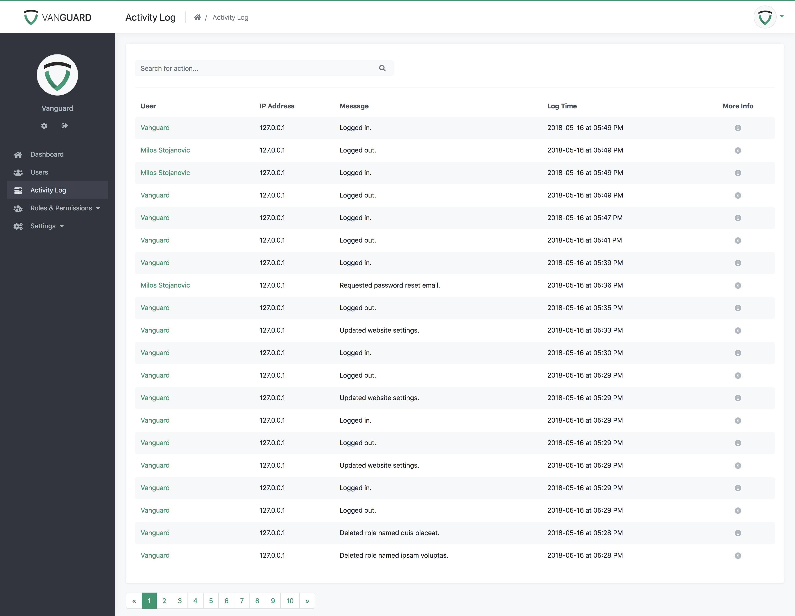
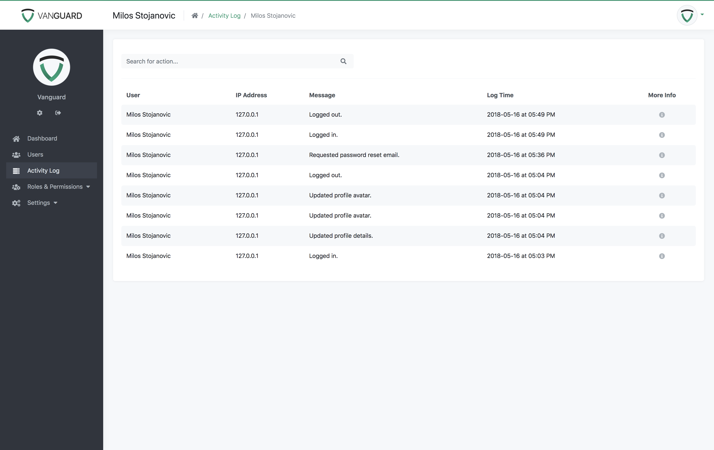

Activity Log
Activity Log
User activity is recorded for every system user. Every time when someone update his profile information, upload avatar or maybe even make password reset email request, system store that activity into database and so system administrators can see what their users are doing.
The list of available activities and appropriate messages is provided below:
| Actions |
|---|
| User was logged in. |
| User was logged out. |
| User created an account. |
| User updated profile avatar. |
| User updated profile details. |
| User was deleted by administrator. |
| User was banned by administrator. |
| User's profile details were updated by administrator |
| Administrator created a user. |
| User updated website settings. |
| User enabled 2FA for his account. |
| User disabled 2FA for his account. |
| Administrator enabled 2FA for user. |
| Administrator disabled 2FA for user. |
| User requested password reset email. |
| User updated his password via password reset form. |
| User created new system role. |
| User updated system role. |
| User delete system role. |
| User updated permissions for role. |
| User created new system permission. |
| User updated the permission. |
| User deleted permission. |
System Activity Log
Administrators are able to see activity logs for all system users, as well as search for specific log messages only, as it is displayed on image below.

Also, if administrator is interested for activity log of particular user, simply by clicking on user's name he can view the entire log for that specific user.
User Activity Log
Non-administrator users can see only their own activity log and search through it if they see some suspicious activity.
